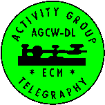

Det europeiska CW-förbundet
hos AGCW-DLs EuCW-kommunikationsfunktionär

|
Det europeiska CW-förbundet
|
 |
EuCW-ordföranden:
M0KTZ, Enzo, Emailadress
Övriga EuCW-funktionärer:
EuCW Snakes and Ladders activity
(EuCWs ormar och stegar-aktivitet) tävlingsledare:
DM4RW, Robert Emailadress
EuCW-diplom-funktionär:
DM4RW, Robert Emailadress
EuCW Midsummer Straight Key Day (EuCWs midsommarhandpumpsdag - SKD) Se SCAG-hemsidan.
EuCW QRS ACTIVITY Week (EuCWs QRS-aktivitetsvecka)
tävlingsledare och webmaster för eucw.org:
DL1GBZ, Martin,
Email Address
EuCW 160m Contest (EuCWs 106m-tävling)
tävlingsledare:
Se UFTs hemsida.
EuCW-kommunikationsfunktionärer. EuCW-kommunikationsfunktionär (European Communications Managers ECM) representerar sina medlemsklubbar i EuCW.
Kontaktpersoner. För att säkerställa vänskaplinga förbindelser som EuCW har med sina associerade transatlantiska klubbar.